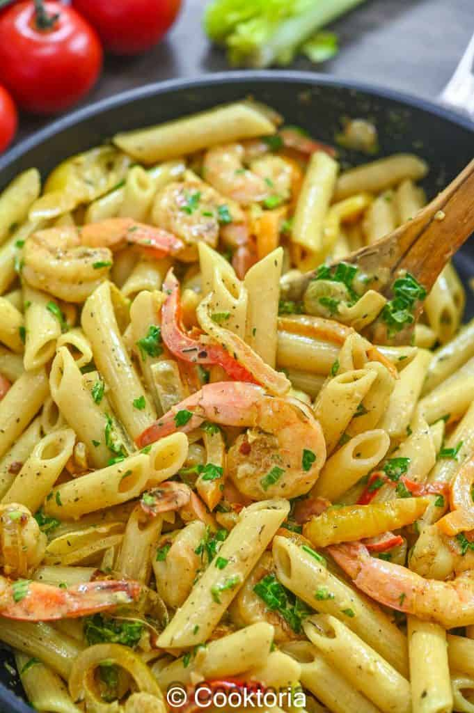

Rasta Pasta

Description
This pasta dish is a mixture of Italian and Jamaican cuisines. Made with penne, or your pasta of choice, seasoned shrimp, creamy sauce, and Jerk seasoning, this recipe brings sweet, salty, smoky, and spicy flavors together into one scrumptious meal. You'll find it irresistible.
Ingredients
- Pasta penne
- Shrimp
- Butter
- Jerk seasoning
- Garlic
- Parmesan
- Parsley
- Heavy cream
- Salt and pepper
Steps
- Cook penne pasta
- While the pasta is cooking, melt the butter in a large skillet over medium-high heat. Add the peppers and onions and cook for just a few minutes, until the veggies start to soften
- At this point, add the shrimp, jerk seasoning, garlic, and salt. Cook for another 4-5 minutes, until the shrimp is just cooked through
- Now, reduce the heat to low, add the cream and Parmesan cheese, and bring to a gentle simmer
- Drain the pasta and add it to the creamy sauce, together with the scallions and parsley. Stir well, turn off the heat, let it rest for a few minutes, and serve